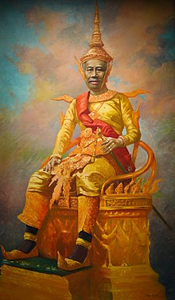

Sisowath Monivong (Khmer: ស៊ីសុវត្ថិ មុនីវង្ស, Sisŏvôtthĕ Mŭnivôngs [ˈsiːsoʋat muˈniːʋɔŋ];[1] 27 December 1875 – 24 April 1941) was the King of Cambodia from 9 August 1927 until his death in 1941. During his reign, Cambodia was a French protectorate. Monivong was the grandson of the poet-king Ang Duong, grandfather of Norodom Sihanouk and the great-grandfather of the current king, Norodom Sihamoni. His full regnal title and style was Preah Bat Samdech Preah Serey Monivarman Krom Luang Chao Chakrabangsa Sisowath Monivong Ney Preah Reacheanachak Kampuchea (Khmer: ព្រះបាទសម្តេចព្រះសិរីមុនីវរ្ម័នក្រុមហ្លួងចៅចក្របាងស្ស ស៊ីសុវត្ថិ មុនីវង្ស នៃព្រះរាជាណចក្រកម្ពុជា) which can be literally translated from Khmerized Sanskrit as "His majesty, glorious lord scholar-protector; His highness, lord of land and sea, Sisowath Monivong of the Kingdom of Kampuchea". He is the most recent monarch from the House of Sisowath, as all his successors are members of the House of Norodom.
Born in Phnom Penh in 1875, Sisowath Monivong was the sixth child and the second son of King Sisowath.[2] His mother was Neak Moneang Van, later titled Samdeach Preah Voreachini, the fifth child-bearing wife of Sisowath. At that time his uncle King Norodom ruled from Oudong, the capital of Cambodia. Norodom was a puppet king for the French colonial protectorate. In 1884, after the French conquered Laos and occupied Vietnam, Cambodia became a direct colonial possession. The royal family then moved from Odong to the new capital of Phnom Penh, where Sisowath Monivong resided.
In 1904, both of his uncles and his elder brother Essaravong died, resulting in Sisowath Monivong becoming the Crown Prince of Cambodia. In 1906, he traveled with his father, King Sisowath, to France.[2] There he was admitted to the Military School of Saint-Maixent. He graduated two years later with the rank sous lieutenant in the Foreign Legion. He was then posted to Brive and later to Paris. In 1909, he returned to Cambodia. In 1910, he was promoted to lieutenant, in 1916 to captain, and finally, in 1922, to chief of battalion. The same year he was released from military service. During the First World War, he actively recruited volunteer military personnel and workers. These services were recognized with the Cross of Commander of the Foreign Legion and the Cambodian title of Samdech Preah Keofea. He was then appointed secretary-general of the council of ministers and president of the council of the Royal Family.
Monivong had many consorts, at least six of whom were granted official recognition, having borne children to him.[2] One of these was a woman named Meak, a member of the Royal Ballet, who was given the title Khun Preah Moneang Bopha Norleak Meak. Meak bore Monivong's son, Prince Sisowath Kusarak, in 1926. Around 1934–1935, two of her young cousins came to live with her, a common Cambodian custom.[3] one of her cousins, named Saloth Sâr, would later adopt the name Pol Pot.Monivong died on 23 April 1941 at the age of 65 at Bokor Mountain which was renamed Preah Monivong National Park in his honour.Reign
In 1927, Sisowath Monivong's father died, so at age 52 Sisowath Monivong ascended to the throne. Like his father and his uncle, Monivong was simply a figurehead for the French administration and, in the words of one author, Monivong "caused the French no trouble".[4] The real power was in the hands of the French Resident-General. The King was surrounded by his Royal Council composed of his cousins: Sisowath Rathary (father of Sisowath Sirik Matak), Sisowath Watchayavong, Norodom Phanouvong, Norodom Suramarit and Norodom Singhara.It was during Monivong's rule that Cambodia became open to outside communist influences. In 1930, the Vietnamese leader Ho Chi Minh founded the Indochinese Communist Party which subsequently obtained popularity in Cambodia. The Cambodian communists' primary objective was to overthrow the French.In 1940, when the French Third Republic fell to Nazi Germany, the "Vichy France" regime took power in the unoccupied parts of France and in its overseas colonies, including Cambodia. In the late 1930s, a powerless Monivong noticed that Imperial Japan was making inroads in Vietnam. Japan then invaded and occupied Cambodia in early 1941. The Japanese allowed Cambodian Vichy French officials to administer, but only under Japanese protection. The Cambodian king was beholden to the Vichy French, who were in turn beholden to the Japanese. In western Cambodia, Thailand, now an ally of the Japanese, occupied territory. As the Japanese and Thai oppression of Cambodians became evident, Sisowath Monivong retired to Kampot in late 1941 and died at Bokor the same year.[5] He died taking the posthumous title of Preah Karuna Preah Sisowath Monivong Preah Khatiyakot (Khmer: ព្រះករុណាព្រះស៊ីសុវត្ថិ មុនីវង្ស ព្រះខត្តិយកោដ្ឋ).His son Sisowath Monireth was the heir to the throne, but the French authorities chose Sisowath Kossamak's nineteen-year-old son Norodom Sihanouk to succeed him instead, mistakenly believing that he would be more pliable than Monireth.[6] Two of his children, Sisowath Monireth and Sisowath Monipong, would go on to serve as prime minister.